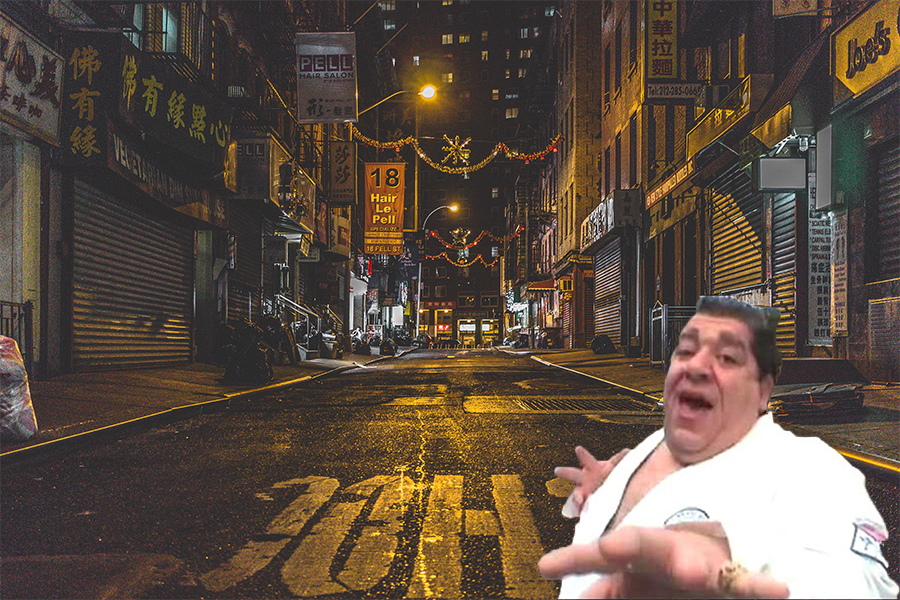

Joey Diaz is a stand up comedian as well as an actor and is the host of his own podcast called "The Church Of What's Happening Now". Diaz is known for his dirty comedy that revolves around his own real life experience's. Through his unconfined jokes he has gained many fans and the respect of other renowned comedians for using comedy that many find funny but are to afraid to say due to people becoming offended. Joey Diaz has appeared in variuous movies as well as tv shows most notably his role as "Big Tony" in the film The Longest Yard. Diaz has gained an even bigger following throughout the world with the videos he has made on Youtube that involve skits with made up charecters such as "joey karate"
